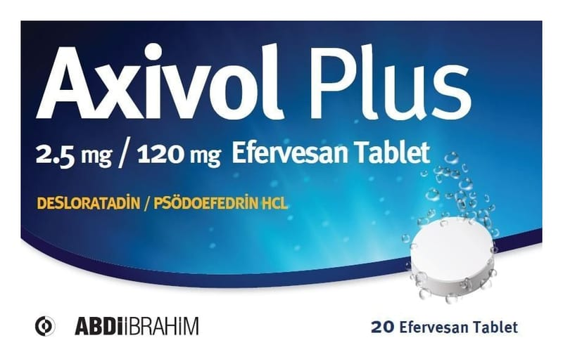

Axivol Plus 2.5 mg / 120 mg Efervesan Tablet, 20 Adet

Ne için kullanılır
KT · Bölüm 1AXİVOL PLUS, beyaz renkte yuvarlak efervesan tabletlerdir. AXİVOL PLUS, 20 efervesan tablet içeren, plastik tüp ve silika jel içeren kapak ambalajda ve karton kutu içinde piyasaya sunulmaktadır. AXİVOL PLUS, alerjik maddelerle karşılaşıldığında veya iltihabi durumlarda etkili antihistamin grubu bir ilaç olan desloratadin ve burun tıkanıklığını gideren psödoefedrin etkin maddelerini içermektedir. AXİVOL PLUS, 12 yaş üstü çocuklarda ve yetişkinlerde alerjik nezle belirtilerinin (hapşırma, burun tıkanıklığı, burun akıntısı ve kaşıntısı) giderilmesinde kullanılır. AXİVOL PLUS, 12 yaş altı çocuklarda kullanılmamaktadır.